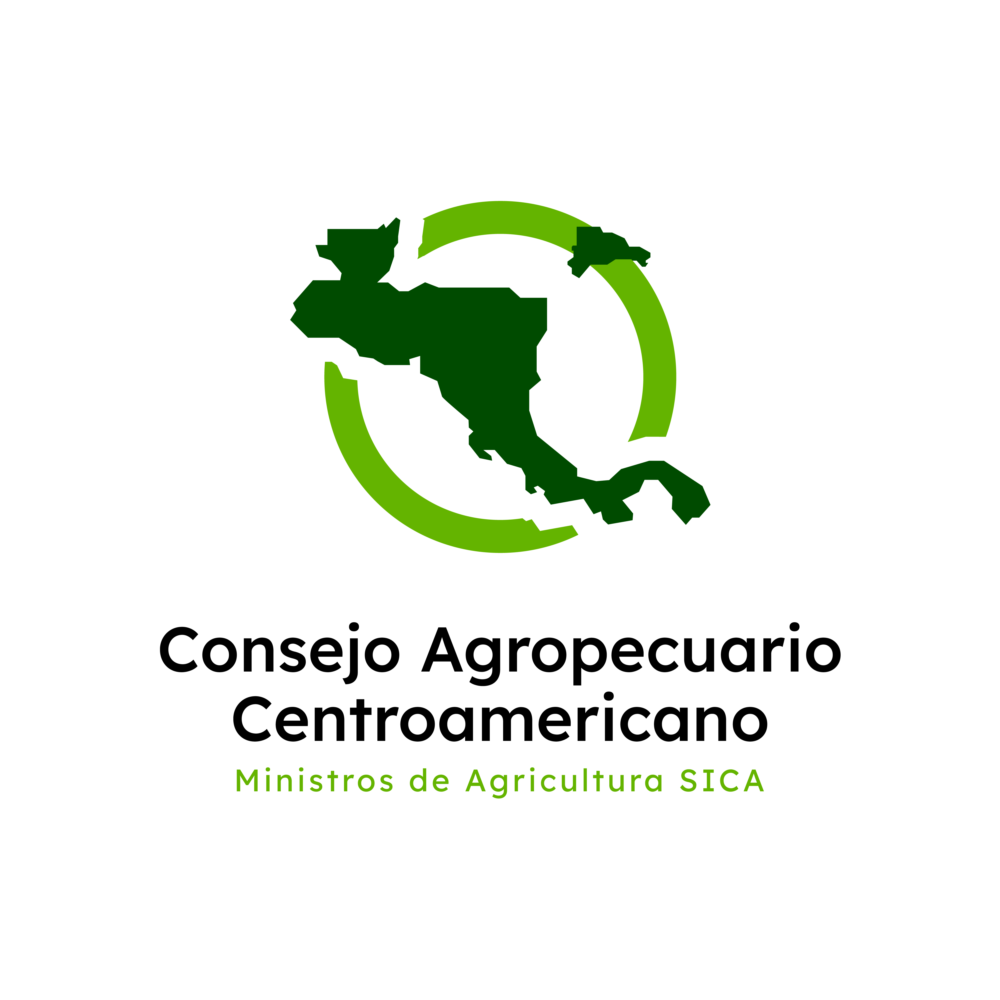
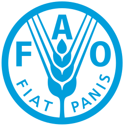
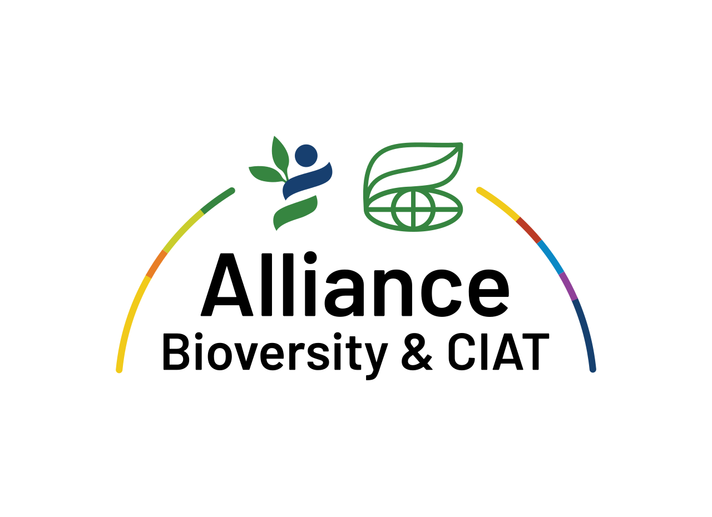

Bioinputs Americas Week 2026
21 al 25 de Septiembre de 2026 |
 San José, Costa Rica
San José, Costa Rica
Cronograma General de la Semana
Por primera vez, Costa Rica será sede de este gran encuentro del 21 al 25 de septiembre de 2026.
21 SEP
Mesas de Trabajo y Talleres
Actualización, colaboración y construcción coordinada de agendas comunes para el sector.
22-23 SEP
4.º Foro Panamericano de Bioinsumos
Conferencias magistrales con referentes internacionales, paneles estratégicos y diálogos de política.
24 SEP
Gira Técnica de Campo
Visitas a experiencias destacadas en el desarrollo y uso práctico de bioinsumos en fincas de Costa Rica.
25 SEP
Sesión con Tomadores de Decisiones
Encuentros clave entre programas y proyectos para alinear acciones y sinergias regionales.
Apoyo Institucional y Coordinación


